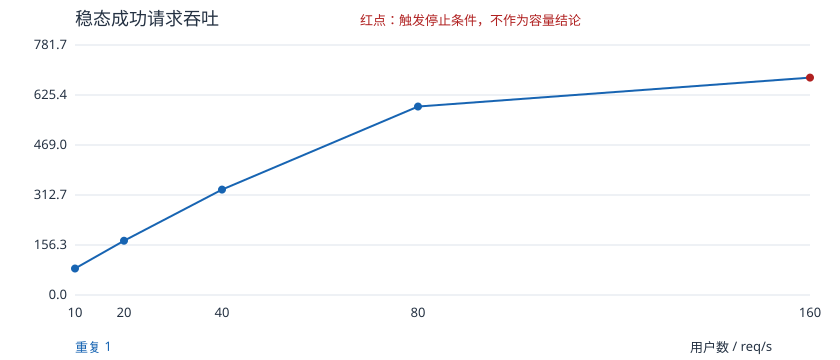
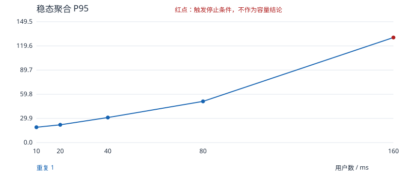

固定热点数据、单会员、独立会话；预热及登录不计入稳态。每档 P95 独立计算，不平均分位数。候选拐点不是已确认容量上限。


| 重复 | 用户 | 窗口秒 | 请求 | 失败数 | 成功 RPS | P95 ms | P99 ms | 失败率 | 压测进程 CPU 中位数 | 判定 |
|---|---|---|---|---|---|---|---|---|---|---|
| 1 | 10 | 60 | 4970 | 0 | 82.83 | 19 | 22 | 0.00000% | 11.0% | first_level |
| 1 | 20 | 60 | 10180 | 0 | 169.67 | 22 | 27 | 0.00000% | 20.1% | no_knee_observed |
| 1 | 40 | 60 | 19777 | 0 | 329.62 | 31 | 40 | 0.00000% | 33.2% | no_knee_observed |
| 1 | 80 | 60 | 35358 | 0 | 589.3 | 51 | 69 | 0.00000% | 88.0% | no_knee_observed |
| 1 | 160 | 60 | 40785 | 0 | 679.75 | 130.0 | 160.0 | 0.00000% | 97.1% | generator_cpu_limit |